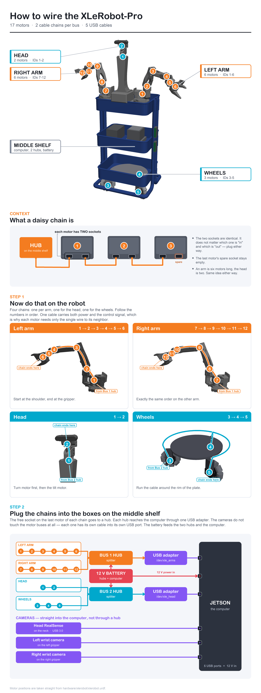

Build & Calibration Guide
Consolidated instructions for assembly, wiring, and physical validation of the dual-arm XLeRobot-Pro platform. 3D-printing files and print settings live on the Components page.
1. Build Overview
This guide walks you through building the platform with 2× SO-101 follower arms, a neck/head assembly, an omni-wheel base on an IKEA RÅSKOG cart, and an NVIDIA Jetson compute node mounted near the neck/base region.

The 2-Bus Separation
All 17 motors run on two independent buses, each carrying two daisy chains. Splitting the buses this way keeps the high-torque wheel and neck motors off the same power budget as the arms, so an arm stall cannot brown out the drive base.
| Bus | Subsystem | Motors | Serial Port |
|---|---|---|---|
| Bus 1 | Left arm + right arm | 12 | /dev/xle_arms |
| Bus 2 | Head + wheel base | 5 | /dev/xle_head |
Recommended Build Order
- Print all parts (files & print settings on Components)
- Assemble both SO-101 arms
- Install wrist camera mounts and grippers
- Assemble cart and wheel base
- Assemble neck / top base / head
- Configure motor IDs — one motor at a time, before final assembly
- Mount Jetson and route wiring
- Final mechanical assembly and cable management
- Bus verification and calibration
- Software setup — install the stack and run the robot
2. Assembly
Overall Assembly
A complete walkthrough of the build process. Use the chapter links in the sections below to jump this video straight to that step.
A) Cart
Assemble the IKEA RÅSKOG cart first to establish the rolling structure.
- Do not finalize cable routing through the cart yet
- Leave access for motor extensions, USB data, power, and camera cable routes
B) Arms (Joints 1–5)
Assemble both SO-101 follower arms using the step-by-step build video below.
Crucial wrist/gripper order:
- Before attaching the gripper to joint 5, install the wrist-camera attachment to the gripper
- Install the gripper claw/fingers
- Use the follower gripper approach on both arms
This order avoids reopening the wrist stack later.
C) Neck (Top Base & Head)
- Assemble the Top Base and Head.
- The head follows the same motor style and is derived from early SO-101 link patterns.
- The hollow neck doubles as a cable channel.
Jump to the neck assembly in the video above (0:00–18:51).
D) Wheels & Wheel Base
Assemble the wheels and wheel base.
Jump to the wheel assembly in the video above (18:52–32:30).
- Keep omni-wheel orientation/order exactly as documented
- Use two nuts per wheel bolt. Thread the first nut on and tighten it, then run a second nut down against it. The two jam together and cannot back off — a single nut works loose from the constant vibration of driving and the wheel eventually comes off.
- Use motor cable extensions — do not rely on short direct runs
- Leave slack until top-plate routing is finalized
- Mount the top plate and connectors only after route checks
E) Integrating Components onto the Cart
Bring the arms, neck, and wheel base together on the cart for the full platform.
- Secure each main shoulder to the cart with a screw and two nuts: pass a screw down through the arm base and the cart shelf, then thread two nuts onto it from the underside — sandwich the cart shelf between the arm base and the nuts, tighten the first, then jam the second down against it. The shoulder carries the whole arm's leverage every time it sweeps, and a single nut will not stay put under that load.
Jump to the full cart integration in the video above (32:35–39:52).
3. Motor Configuration & IDs
Configure motors before final cable management and hard mounting — verifying IDs on an assembled chain is far slower. Many servos ship with default ID 1, so each ID must be unique per bus and the baudrate must match the board and motors.
The signature is unmistakable once you know it: each motor responds fine in isolation, and the assembled chain responds to nothing. This reads exactly like a power fault, a dead adapter, or bad cabling — and it is none of those. A right arm shipped as IDs 1–6 duplicates the entire left arm.
/dev/ttyACM0, NOT /dev/xle_arms. The friendly bus names are created later, in software setup step 7, by a script that identifies each adapter from the motor IDs that answer on it. Those IDs are what you are assigning right now, so the names cannot exist yet. Everything in this section uses /dev/ttyACM0 (macOS: /dev/tty.usbmodem*).
Before you start
You need the software stack installed to run these tools, but nothing beyond the base install — steps 3–5 of software setup is enough. Grant serial access first, or every command below fails with Permission denied:
# log out and back in for this to take effect
# just for this boot, if you cannot log out right now:
$ sudo chmod 666 /dev/ttyACM0
ID Planning
| Bus | Recommended IDs | Mapping Notes |
|---|---|---|
| Bus 1 (Both Arms) | 1–12 | 1–6 left arm, 7–12 right arm — SO-101 follower mapping, shoulder to gripper |
| Bus 2 (Head & Wheels) | 1–5 | ID 1 = tilt (up/down), ID 2 = pan (left/right), 3–5 wheels |
Step 1 — Scan what is actually on the bus
This sweeps every supported baud rate and pings every address, so it finds motors even at the wrong baud or the wrong ID. Model 777 is the STS3215.
$ ls /dev/ttyACM*
# List every motor answering on a bus, at any baud rate
$ python -c "from lerobot.motors.feetech import FeetechMotorsBus; \
print(FeetechMotorsBus.scan_port('/dev/ttyACM0'))"
A brand-new motor answers as ID 1. That is why they must be configured one at a time — a bag of factory servos is seventeen motors all claiming the same address.
Step 2 — Write one ID at a time
set_motor_id.py reprograms whatever answers. With other motors attached it will either collide or silently rewrite a working joint — turning one problem into two.
$ lerobot-find-port
# ONE motor connected. Assign its ID from the table above.
$ python set_motor_id.py --port /dev/ttyACM0 --id 7
# Non-STS3215 motor? name the model explicitly:
$ python set_motor_id.py --port /dev/ttyACM0 --id 7 --model scs0009
The tool scans every baudrate to find the motor, so it works even on a servo that is at an unexpected ID or baud. It reprograms it to your chosen ID at the default 1 Mbps. --model defaults to sts3215, which is what this build uses throughout.
Isolate each motor, confirm its current ID with a scan, then write the correct one. Add motors back and re-scan as you go — a complete chain should list every ID with no gaps.
L-1…L-6, R-7…R-12, H-1…H-2, W-3…W-5.
4. NVIDIA Jetson Placement
Mount the Jetson in the center rack of the cart, between the wheel base and the top plate.
- Keep mass low for stability
- Keep USB ports accessible
- Minimize cable length to the two motor control boards, two wrist cameras, one head camera, and power distribution
error -110 and unable to enumerate USB device. The adapter looks physically connected but never creates a /dev/ttyACM* node, so its bus is invisible rather than broken. That is five USB devices on the Jetson: two adapters and three cameras. Plan the port budget around it — which is also why the software guide has you work over SSH rather than plugging in a keyboard.
5. Wiring (2-Bus)
Seventeen motors, four daisy chains, two bus hubs, five USB cables. The diagram below is the complete reference — chain order per limb, which chain lands on which hub, and how the hubs and cameras reach the Jetson. Motor positions are taken straight from the robot's URDF.

A) Motor Wiring
Four daisy chains. One cable carries both power and the control signal, which is why each motor needs only the single wire to its neighbour. The free socket on the last motor of each chain goes to its bus hub.
- Bus 1 — Left arm (1→2→3→4→5→6): start at the shoulder, end at the gripper; chain head plugs into the Bus 1 hub
- Bus 1 — Right arm (7→8→9→10→11→12): exactly the same order on the other arm; also into the Bus 1 hub
- Bus 2 — Head (1→2): ID 1 is tilt (up/down), ID 2 is pan (left/right)
- Bus 2 — Wheels (3→4→5): run the cable around the rim of the wheel plate; use extensions for clean routing up to the middle shelf
Cable Routing
A daisy chain breaks at any point and everything downstream goes silent. Two rules prevent most of the grief:
- Service loop at every rotating joint. Shoulder pan sweeps the whole arm; without slack the cable pulls its own connector at the travel extremes and drops the bus mid-motion. This surfaces during calibration, where a single dropped packet aborts the run.
- The first link carries every transaction. The adapter-to-first-motor cable is the highest-value thing to re-seat when a bus misbehaves.
Also: avoid tight bends near connectors, keep motion cables away from pinch points, and label both ends of every extension.
B) Power Wiring
There are three separate things here and confusing them costs hours: servo power, Jetson power, and USB. USB carries data only.
| Rail | Feeds | Requirement |
|---|---|---|
| Compute | Jetson carrier | Barrel jack or USB-C PD, per NVIDIA spec |
| Servo — arms | Bus 1, 12 motors | 12 V, several amps — the largest aggregate load on the robot |
| Servo — head/base | Bus 2, 5 motors | 12 V |
| Adapter boards | Bus transceivers | Barrel jack on each board |
- 12 V battery mounted low and upright in the cart, with strain relief at the battery and distribution points
- Main power line routed to a distribution point on the middle shelf
- Separate fused outputs for the Bus 1 hub (arms), the Bus 2 hub (head + wheels), and the Jetson power path — the repo's firmware limits assume 5 A on the arm bus and 10 A on the head/wheel bus, so keep the fuses and the torque ceilings in
firmware_limits.pyconsistent with each other
Grounding
If the adapter board and the motor chain are fed from different supplies, they must still share a common ground — otherwise the data line has no valid voltage reference. The symptom is distinctive: every motor powered and drawing current, and zero communication.
Watch for load asymmetry when diagnosing. A marginal supply often carries three wheels fine and cannot carry twelve arm joints, which presents as "the arm bus is broken."
C) Camera Wiring
The cameras do not touch the motor buses at all — each one runs its own cable into its own USB port on the Jetson, never through a bus hub.
- Wrist cameras (×2): route each cable along its arm with full-motion slack; secure at intervals; keep compute-end connectors accessible
- Head camera (RealSense): route through the hollow neck into a USB 3.0 port; leave pan/tilt slack at the head joint
That accounts for all five USB cables: two bus adapters and three cameras.
6. Final Assembly
Complete final assembly, substituting the Jetson where older instructions reference a Raspberry Pi.
- Complete wiring and cable management before clamping the top base into the cart
- Clamp arms onto the cart corners after route verification
Final Checklist
Mechanical & Power
- Jetson mounted securely
- Battery secured and upright
- No cable pinch points
- Full arm range without cable snagging
- Wheel base rotates freely
Electrical & Sensing
- Both buses configured and tested independently
- Motor IDs verified — 1–12 on Bus 1, 1–5 on Bus 2
- Motor directions verified
- Head axes confirmed: ID 1 up/down, ID 2 left/right
- Both wrist cameras detected
- Head camera detected
7. Hardware Calibration & Validation
One whole-robot calibration serves both the robot class and the vision stack. Run it first, verify it, then work through the sanity checks below.
/dev/xle_arms and /dev/xle_head exist (step 7), and every motor answers a bus scan (step 8). Calibrating a chain with a missing or duplicated motor produces a file that looks fine and is wrong.
A) Run the Calibration
lerobot-calibrate cannot see this robot. Its --robot.type does not offer xlerobot_new_wiring. The robot classes are registered, but robots/utils.py imports them lazily inside its dispatch function, so the config module never loads and the registration decorator never runs. Drive the class directly with the script below instead.
from lerobot.robots.xlerobot.xlerobot_new_wiring import XLerobotNewWiring
config = XLerobotNewWiringConfig(
id="xlerobot", port1="/dev/xle_arms", port2="/dev/xle_head"
)
robot = XLerobotNewWiring(config)
robot.connect(calibrate=False)
try:
robot.calibrate()
finally:
robot.disconnect()
The run has four prompts: centre both arms, sweep every arm joint through its full range, centre the head, and then the wheels are handled automatically as full-turn motors.
B) Verify the Calibration — Do Not Skip This
Calibration can complete successfully and still be wrong. There are two failure modes and both are silent:
- Range reads 0–4095 on a limited joint. The homing offset landed inside the travel range, so the raw count wrapped and min/max pinned to the encoder extremes. This is legitimate only for wrist roll and the wheels — a shoulder or elbow cannot travel 360°. Consequence: IK commands positions that do not exist and the arm drives into its hard stop.
- Range far narrower than its mirror. That joint was not swept fully. Consequence: the arm is artificially limited and IK fails to reach valid targets.
The strongest check is left/right symmetry. Mirrored joints should agree within a few percent — here is a known-good run:
| Joint Pair | Left Span | Right Span | Ratio |
|---|---|---|---|
| shoulder_pan | 2715 | 2732 | 0.99 |
| shoulder_lift | 2418 | 2433 | 0.99 |
| elbow_flex | 2217 | 2197 | 0.99 |
| wrist_flex | 2358 | 2335 | 0.99 |
| gripper | 1526 | 1448 | 0.95 |
Two independently-swept arms landing within a few percent of each other is not something you get by accident — it is the best available evidence the calibration is sound.
C) Read Back What the Robot Thinks It Is
These print calibrated positions, so a joint reporting a wild angle at a pose you can see means the calibration did not take. Nothing is commanded to move — but read the warning first.
read_motors.py RELEASES ARM TORQUE ON PURPOSE — it is designed so you can pose the arm by hand — and then waits at a prompt. A raised arm will fall the moment it runs. Lower both arms, or hold them, before starting it.
# arm joint angles, from /dev/xle_arms
$ python diagnostics/read_head.py
# head tilt and pan, from /dev/xle_head
D) First Commanded Motion
Start with the base — it is the only subsystem where a mistake cannot drop an arm on your hand. Then move the arms.
$ python diagnostics/base_drive_check.py --vx 0.05 --seconds 2
# whole robot: both arms, head and base, on a gamepad
$ python examples/5_xlerobot_teleop_xbox_new_wiring.py
_new_wiring VARIANT. The plain 5_xlerobot_teleop_xbox.py targets the older three-bus layout and opens /dev/xle_right and /dev/xle_left — ports that do not exist on this build. For single-arm keyboard control, prefer the copies under examples/xlerobot_examples/, which prompt for a port, over the same-named files directly under examples/, which hardcode the old names. Full detail in software setup step 11.
E) Mechanical IK Accuracy
Once the arm takes end-effector commands, check that the gripper actually arrives where it was told. Expect 1–2 cm; worse than that is mechanical, not software — look for loose servo horns, a stripped gear, or a bent bracket. The First Reach tutorial walks through this end to end.
# prints joint angles and the model's EE position for them
$ python diagnostics/measure_ee.py
measure_ee.py hardcodes PORT = "/dev/ttyACM0" near the top of the file — change it to /dev/xle_arms for this build.
F) Camera Bring-up
$ python examples/9_dual_wrist_camera.py
$ rs-enumerate-devices
Hardware Is Validated When
- Every arm joint moves in the expected direction
- Head tilt and pan move on the expected axes
- Wheels drive and stop reliably
- All three camera streams open
- Mirrored joints agree within a few percent
Then Go To
- Autonomous cube grasp
- First Reach tutorial
- Troubleshooting, if anything above failed
Hardware validated? Move on to software configuration.
Next Step: Software Setup ↗